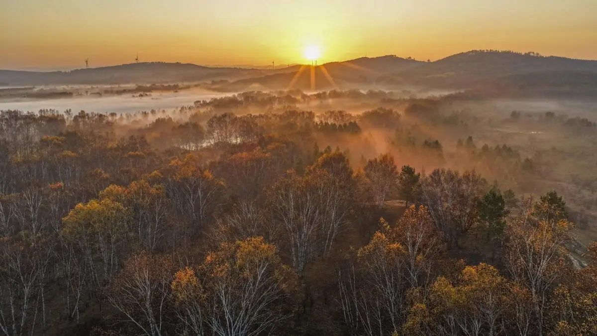
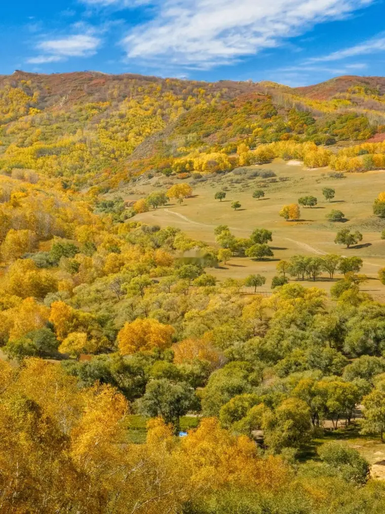
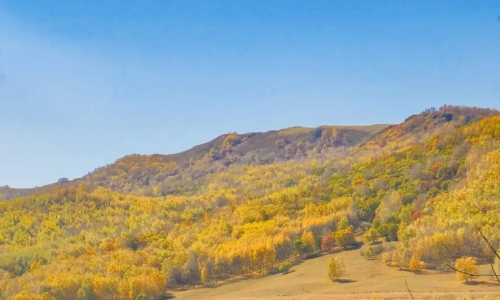
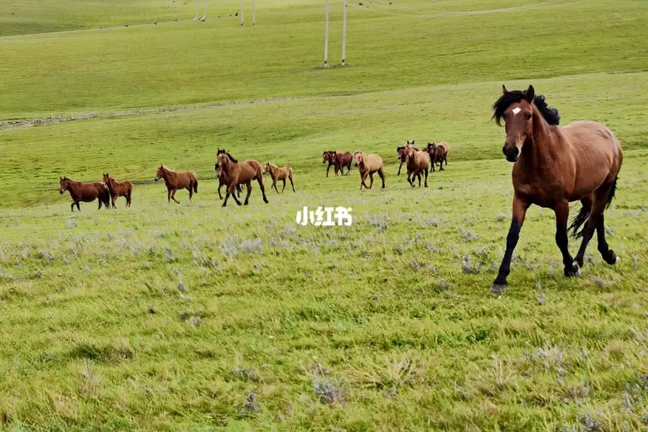
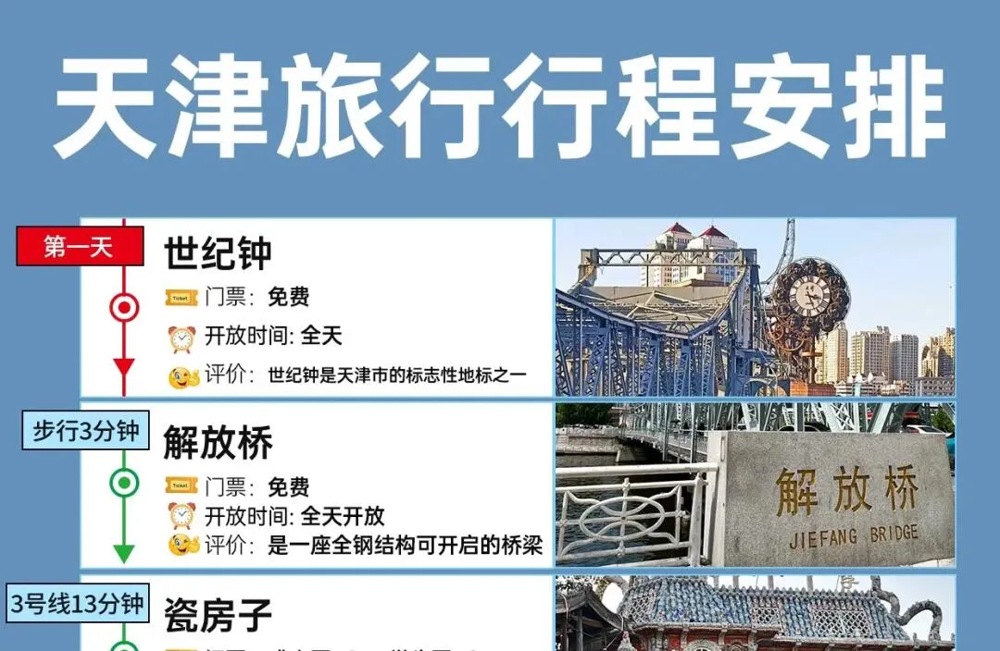
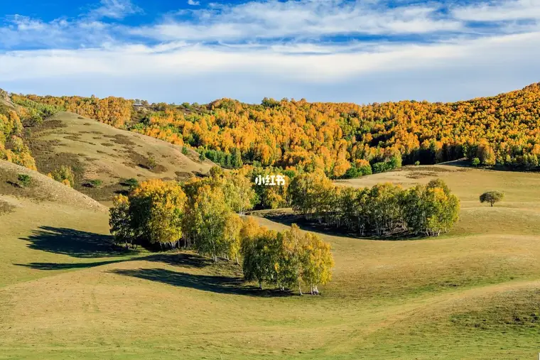
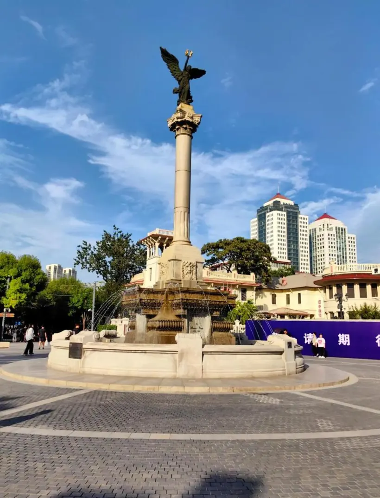
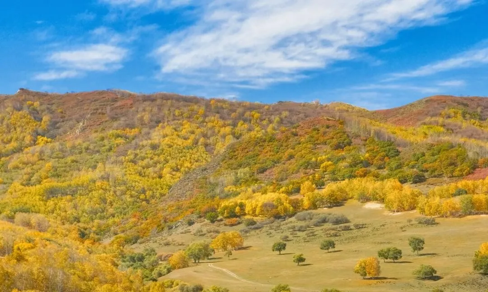
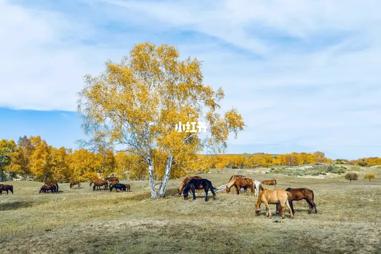

青岛出发 → 天津 → 承德 → 塞罕坝 → 乌兰布统 → 克什克腾 → 回青岛 ｜ 一家三口 · 2026.09.27 — 10.04
| 天 | 日期 | 路线与安排 | 驾驶 | 住宿地 |
|---|---|---|---|---|
| D1 | 9.27 周日 | 青岛 → 天津（约 560 km）。下午五大道、瓷房子、意式风情区，晚上天津之眼。✅ 已完成 | 约 560 km | 天津市 |
| D2 | 9.28 周一 | 上午西开教堂／古文化街 → 天津 → 承德（约 380 km），傍晚到。✅ 已完成，今晚宿承德 | 约 380 km | 承德市 |
| D3 | 9.29 周二 | 上午避暑山庄（旺季门票约 ¥145，山区建筑群+湖区，3 小时精华游；山区可坐观光车 ¥50）→ 午饭后出发 → 国家一号风景大道 → 御道口（桃山湖、太阳湖）→ 傍晚到塞罕坝机械林场一带住宿。 | 约 280 km 4.5 小时 | 塞罕坝／御道口 |
| D4 | 9.30 周三 | 上午塞罕坝林海（七星湖、泰丰湖、亮兵台、白桦林）→ 中午过界河（滦河源头）进内蒙古 → 下午公主湖，傍晚影视基地／北沟看日落。 | 约 100 km | 乌兰布统 |
| D5 | 10.1 周四 国庆首日·早进景区 | 乌兰布统全天：蛤蟆坝（晨光最好，7 点前进）、桦木沟、五彩山、将军泡子、野鸭湖。傍晚北沟看日落收尾。10.1 早 7 点前进景区避开人流。 | 约 120 km 景区内 | 乌兰布统 |
| D6 | 10.2 周五 返程第一段 | 睡到自然醒，上午可补公主湖晨雾或盘龙峡谷 → 中午出发 → 大河口／御道口 → 围场 → 承德（约 420 km）。晚上承德休整，逛元宝街，吃羊汤。 | 约 420 km 6 小时 | 承德市 |
| D7 | 10.3 周六 返程第二段 | 承德 → 北京外围 → 天津 → 德州／济南（约 650 km）。7:00 前出发避开京承早高峰，傍晚到济南，可逛芙蓉街吃夜宵。 | 约 650 km 7 小时 | 济南／德州 |
| D8 | 10.4 周日 返程收尾 | 济南 → 潍坊 → 青岛（约 360 km）。午前上路，济青北线（G20）济南—潍坊段是常年堵点，尽量 15:00 前通过；午后到家，行程收尾。 | 约 360 km 4.5 小时 | 到家 🏠 |






世界唯一建在桥上的摩天轮，横跨海河，转一圈约 28 分钟。日票 ¥90、夜票 ¥138，9:30–21:30，每周一检修闭馆，9.27 晚已打卡。傍晚去最值：白天景+华灯初上一次看全。不坐的话在金刚桥/永乐桥沿岸拍夜景也很出片。其余五大道、意式风情区、海河边都是免费漫游路线，详见 D1 行程。

两山夹一沟的丘陵田园，沟谷里散着村落、木栅栏与牛羊，山顶白桦、山腰梯田、山麓老榆树。日落前 1 小时到，暖金光把树影人影拉长，是坝上公认最耐拍的机位。建议清晨或傍晚各去一次。
乌兰布统的秋色主角就是白桦：树干雪白、树冠金黄，成片立在起伏草坡上。桦木沟一带地形多变，草场、湿地、峡谷、丘陵交错，逆光下最通透。夹皮沟、小河头白桦林也可以顺路看。
金黄落叶松、红黄灌木与绿色草甸同期变色，从山脊到谷底层层铺开，是坝上秋色的主调，沿途自驾随处可停。

中国现存最大的皇家园林，9.29 上午安排 3 小时精华游：湖区乘船看烟雨楼，山区坐观光车（¥50）登四亭俯瞰外八庙。8:00 开门就进，旅行团 10 点后才到。
| 日期 | 住宿地 | 建议 | 参考价 |
|---|---|---|---|
| 9.27 | 天津市 | 海河／五大道一带酒店 ✅ 已住 | ¥280–400 |
| 9.28 / 10.2 | 承德市 | 避暑山庄外围或武烈河畔商务酒店，晚上逛元宝街方便 | ¥350–500 |
| 9.29 | 塞罕坝·御道口 | 机械林场或御道口镇周边农家院／度假酒店，靠景区门口省时间 | ¥300–450 |
| 9.30 / 10.1 | 乌兰布统 | 红山军马场镇上的宾馆／蒙古包度假村，十一最紧俏，务必提前订 | ¥400–700 |
| 10.3 | 济南／德州 | 市区连锁或商务酒店，靠高速口方便次日出发 | ¥250–350 |
| 项目 | 挂牌价 | 3 人估算 | 备注 |
|---|---|---|---|
| 乌兰布统大景区 | 120 元/人 | ¥360 | 通票，含公主湖、将军泡子等小景点；优惠票种以现场证件为准 |
| 御道口草原森林风景区 | 通票 80 元/人 西环线 60 元/人 | ¥240 | 2026 年开园公告价；各类优惠票种以现场证件为准；月亮湖 30 元、欧洲风情园 10 元单点售票 |
| 塞罕坝机械林场 / 七星湖 | 多数免费 | ¥0 | 2022 年起部分景点免费开放、需实名预约；七星湖、亮兵台等个别点位历史上曾单独售票，以现场为准 |
| 蛤蟆坝 | 0–30 元/人 | ¥0–90 | 多数年份并入乌兰布统通票，个别年份单独收 30 元 |
| 草原越野车穿越 | 160 元/人 | ¥480 | 4 人一车、半天约 4 小时，进草原腹地必选 |
全程估算约 ¥10,300、人均约 ¥3,450，构成：住宿（7 晚）≈¥2,800、餐饮 ≈¥2,600、油费 ≈¥1,850、过路费 ≈¥400（返程在高速免费窗口）、门票 ≈¥1,300–1,700（含避暑山庄）、越野车／停车等 ≈¥650。
穿衣：坝上 10 月初白天 8–15℃、夜间可到 0℃ 甚至更低，风大。车上备羽绒服或厚冲锋衣、保暖内衣、帽子手套围巾；看日出晨雾时全套上。
随车：备胎与换胎工具、充气泵、防冻玻璃水、矿泉水与干粮、颈枕腰枕、厚毯子、充电线、离线地图。
证件：身份证随身（过检查站、买门票都用得上），老年证／身份证能免票，一定带上。
防火与限速：秋季是森林草原防火期，部分林区、栈道会封闭，进景区主动上交火种；坝上部分路段有区间限速与野生动物出没，别贪快。
加油：城镇见加油站加满，草原深处站点稀。
吃：烤全羊／手把肉、铜锅涮肉、莜面、蒙古奶茶，承德一侧还有锅贴与驴肉火烧。